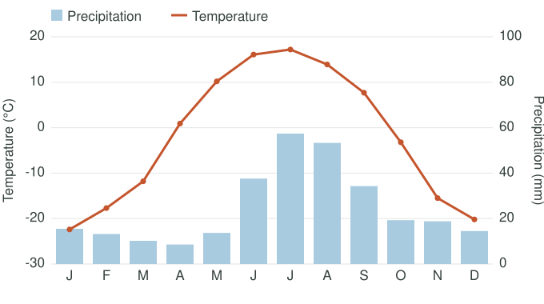
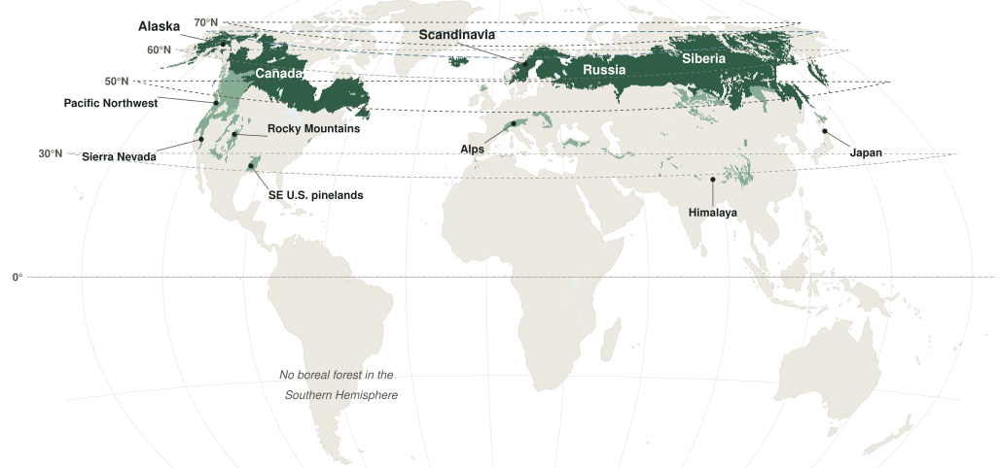
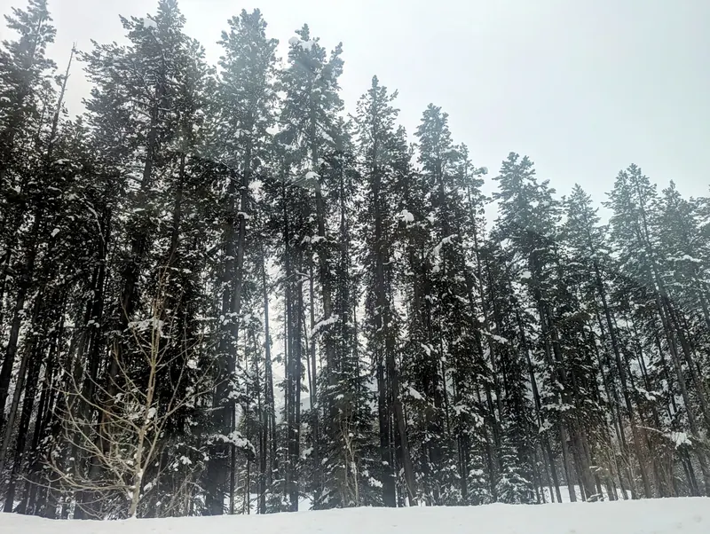
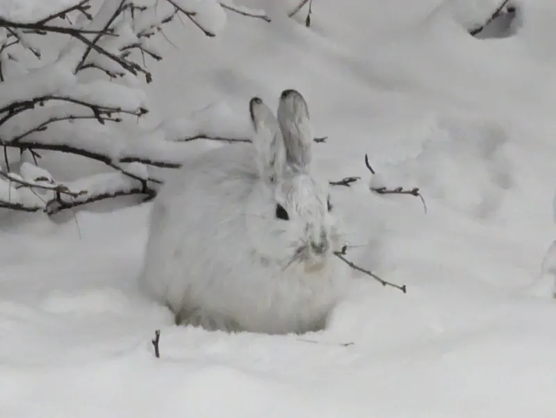
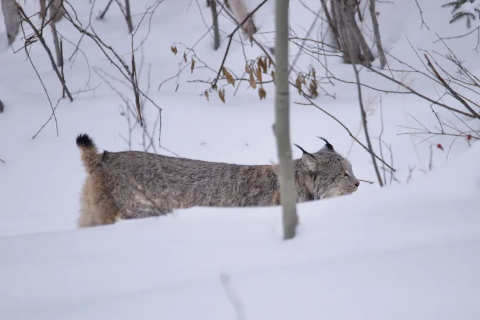
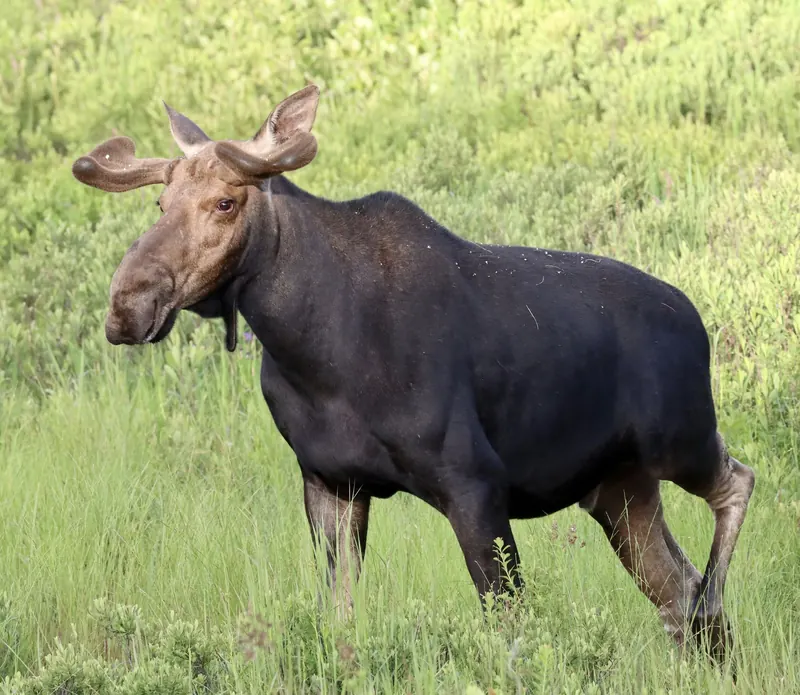
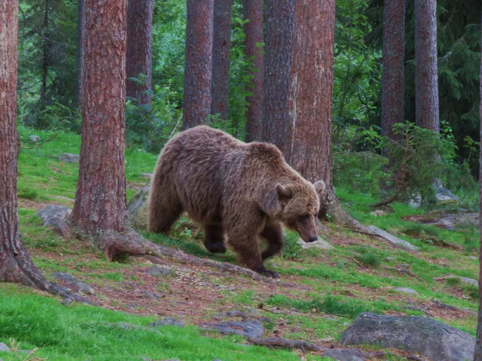

Black spruce
A narrow, spire shape sheds heavy snow. Small waxy needles lose little water and stay on all year, so the tree can grow the moment it warms. Shallow roots spread across thin soil above frozen ground.

Terrestrial biome
The evergreen coniferous forest, also called the boreal forest or taiga, is the largest land biome on Earth. Its cone-bearing trees, mostly spruce, pine and fir, keep their needles all year and grow where winters are long and cold.
TemperatureWinters are long and very cold, and summers are short and mild. In Fairbanks, Alaska, the average is -22 °C in January and 17 °C in July, and the frost-free season lasts only about 121 days.
PrecipitationPrecipitation is low, about 300 mm a year in Fairbanks, and much of it falls as snow. Cool summers mean little water evaporates, so the ground stays moist.
Climatogram for Fairbanks, Alaska

The main soils are podzols (spodosols). They are acidic, sandy and low in nutrients. Fallen needles are acidic and rot slowly in the cold, and rain washes nutrients down below the roots.
Wet lowlands have peat, and permafrost (ground that stays frozen all year) lies under much of the northern forest.
The forest forms a belt across Alaska, Canada, Scandinavia and Russia (mostly Siberia), between about 50° and 60° N. In places it reaches toward 70° N. It is missing from the Southern Hemisphere because there is very little land at those latitudes.

Every organism here is built to handle cold, snow and a short growing season.
A narrow, spire shape sheds heavy snow. Small waxy needles lose little water and stay on all year, so the tree can grow the moment it warms. Shallow roots spread across thin soil above frozen ground.

Many cones are sealed with resin and only open in the heat of a fire. Fire clears the ground, and the seeds fall onto bare, sunny soil.

The coat is brown in summer and white in winter, matching the snow. Big, furry hind feet spread out to walk on top of it.

Large furry paws work like snowshoes, and a thick coat keeps it warm. It mostly eats snowshoe hares, so lynx numbers rise and fall with the hares.

Very long legs step over deep snow, and a thick coat of hollow hairs insulates the body. In winter it survives on twigs and bark.

It eats heavily in late summer to build up fat, then sleeps through the winter in a den, when food is scarce.

Problem
Clear-cutting removes habitat, and trees take a long time to regrow in the short growing season. Roads, mines and oil and gas sites split the forest into pieces that animals such as caribou struggle to cross.
Solutions
Cut selectively, replant after logging, protect large areas, restore mined land and build wildlife overpasses.

Problem
The north is warming faster than most of the planet. Hotter, drier summers cause bigger and more frequent fires, and thawing permafrost releases stored carbon.
Solutions
Cut greenhouse gas emissions, use prescribed burns to remove fuel near towns and fight fires early.

Problem
Milder winters no longer kill many bark beetles. Mountain pine beetle outbreaks in western Canada have killed pines over huge areas.
Solutions
Remove infested trees, plant a mix of tree species instead of one and monitor for outbreaks.